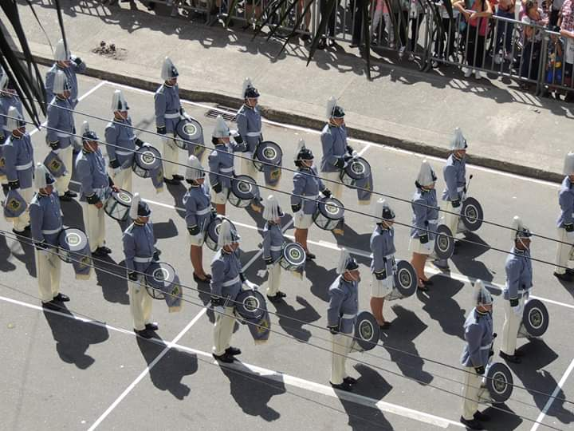

HOBBY

BANDA MARCIAL PRADO BRASILIA
Mi mayor hobby comienza desde los 8 años de edad , llevo 21 años en el y aca te cuento la historia de como empezó todo y como a lo largo del tiempo he ido evolucionando en este hobby, que mas que un hobby es una pasión.
Desde muy pequeño mis padres me decian que mantenia tocando con las ollas y tapas de la cocina por toda la casa, todo el día y asi fui creciendo, haciendo musica a mi modo. A los 8 años mis padres supieron de una banda de marcha infantil que habia por la casa y por medio de mi tia paterna quien ya habia estado en una banda en su infancia, conocia al director y me ingresaron a ella Desde muy pequeño mis padres me decian que mantenia tocando con las ollas y tapas de la cocina por toda la casa, todo el día y asi fui creciendo, haciendo musica a mi modo. A los 8 años mis padres supieron de una banda de marcha infantil que habia por la casa y por medio de mi tia paterna quien ya habia estado en una banda en su infancia, conocia al director y me ingresaron a ella .
Desde muy pequeño mis padres me decian que mantenia tocando con las ollas y tapas de la cocina por toda la casa, todo el día y asi fui creciendo, haciendo musica a mi modo. A los 8 años mis padres supieron de una banda de marcha infantil que habia por la casa y por medio de mi tia paterna quien ya habia estado en una banda en su infancia, conocia al director y me ingresaron a ella Desde muy pequeño mis padres me decian que mantenia tocando con las ollas y tapas de la cocina por toda la casa, todo el día y asi fui creciendo, haciendo musica a mi modo. A los 8 años mis padres supieron de una banda de marcha infantil que habia por la casa y por medio de mi tia paterna quien ya habia estado en una banda en su infancia, conocia al director y me ingresaron a ella
Desde muy pequeño mis padres me decian que mantenia tocando con las ollas y tapas de la cocina por toda la casa, todo el día y asi fui creciendo, haciendo musica a mi modo. A los 8 años mis padres supieron de una banda de marcha infantil que habia por la casa y por medio de mi tia paterna quien ya habia estado en una banda en su infancia, conocia al director y me ingresaron a ella Desde muy pequeño mis padres me decian que mantenia tocando con las ollas y tapas de la cocina por toda la casa, todo el día y asi fui creciendo, haciendo musica a mi modo. A los 8 años mis padres supieron de una banda de marcha infantil que habia por la casa y por medio de mi tia paterna quien ya habia estado en una banda en su infancia, conocia al director y me ingresaron a ella
Desde muy pequeño mis padres me decian que mantenia tocando con las ollas y tapas de la cocina por toda la casa, todo el día y asi fui creciendo, haciendo musica a mi modo. A los 8 años mis padres supieron de una banda de marcha infantil que habia por la casa y por medio de mi tia paterna quien ya habia estado en una banda en su infancia, conocia al director y me ingresaron a ella Desde muy pequeño mis padres me decian que mantenia tocando con las ollas y tapas de la cocina por toda la casa, todo el día y asi fui creciendo, haciendo musica a mi modo. A los 8 años mis padres supieron de una banda de marcha infantil que habia por la casa y por medio de mi tia paterna quien ya habia estado en una banda en su infancia, conocia al director y me ingresaron a ella
__________________________________________________________________________________________________________